-
Hey guys I just finished installing my a-pillar gauges and I thought I'd share my installation procedure. I installed these because I wanted a more accurate readout than the stock gauges, which are hardly working as it is. That being said, I went sorta cheap and got the prosport performance gauges and the lo-tek a-pillar pod.
Anyway, once you have all your goodies, start by removing the panel below the steering wheel, and the two trim pieces behind it.
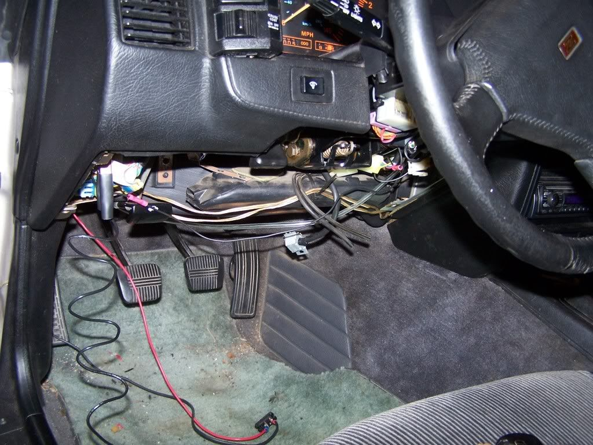
It would probably be easier if you removed the steering wheel too, but I didn't bother
Now it's time to find a wire to tap into for the power to the gauges. You can set it up however you want, but most people wire them so the come on the the ignition switch. Use a test light and backprobe the terminals to find a wire that gets power from the key ignition switch with the key on.
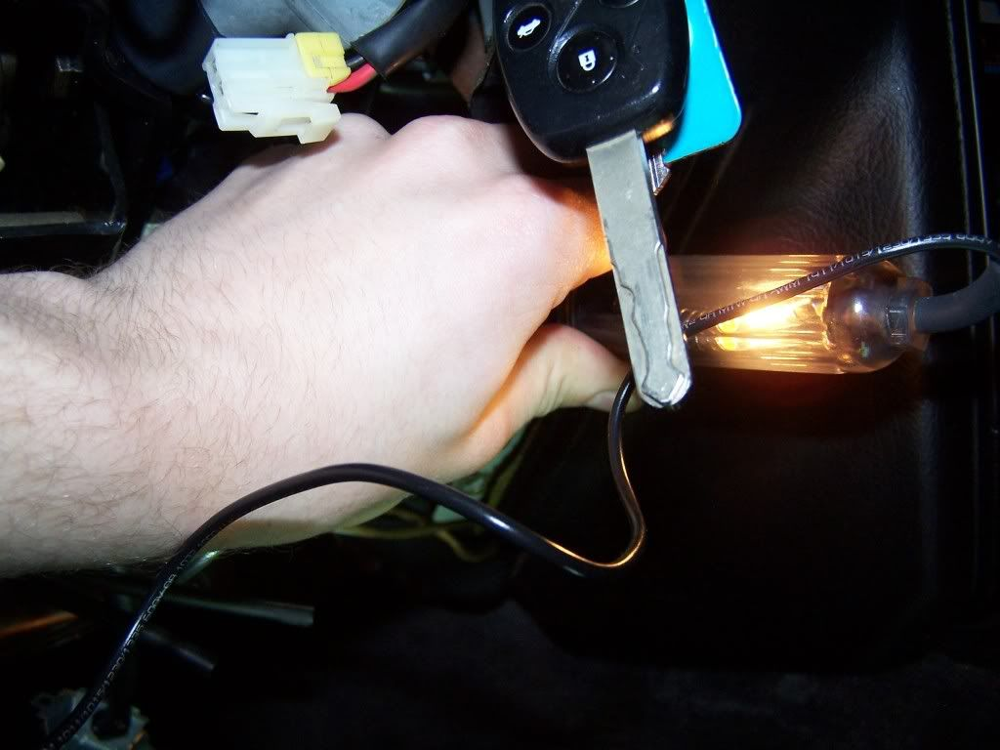
I used this wire:
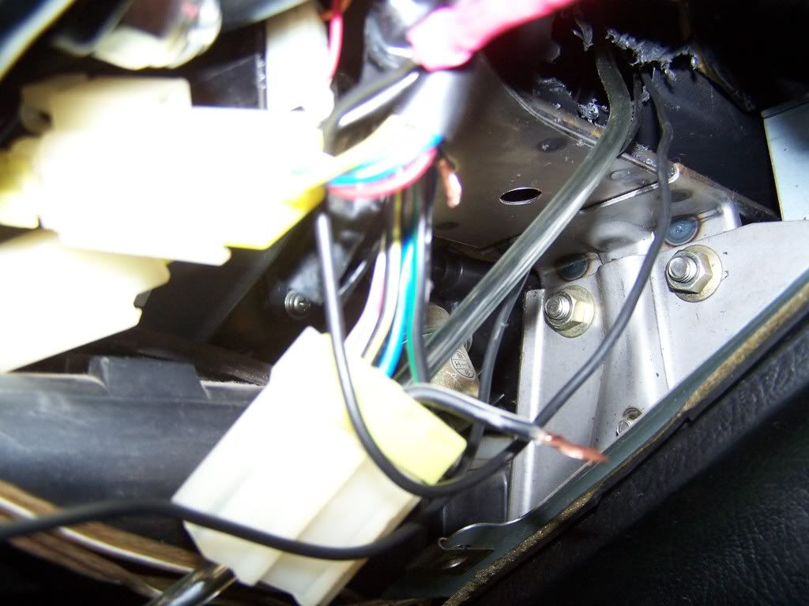
Now to pop the stock a-pillar off and feed a wire through the gap on the dashboard from the absent a-pillar down to the interior. You may need needle nose pliers to pull the wire down from inside the dash.
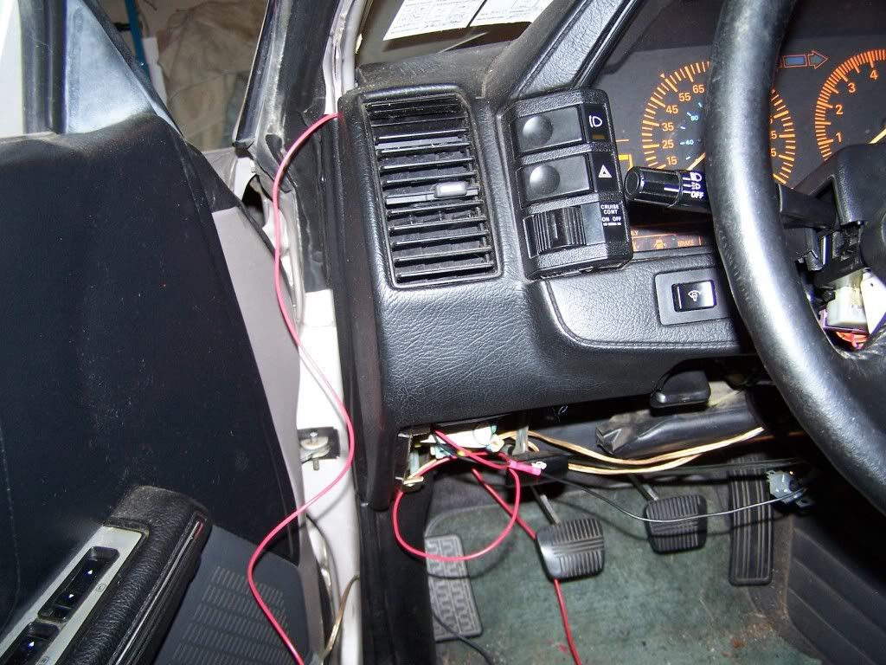
Take the end of that wire and splice it into your ignition wire. I used a crimp connector, but there are certainly better methods.
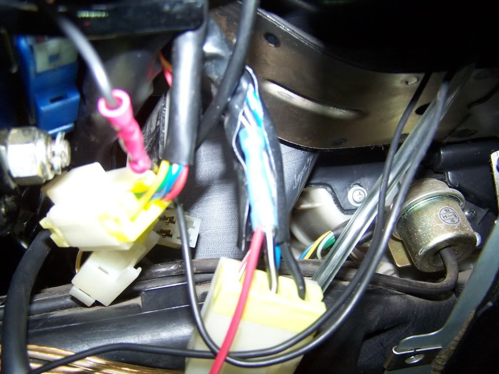
Feed a second wire down through the dash and find a suitable grounding point. Use proper wiring hardware to attach the ground point.
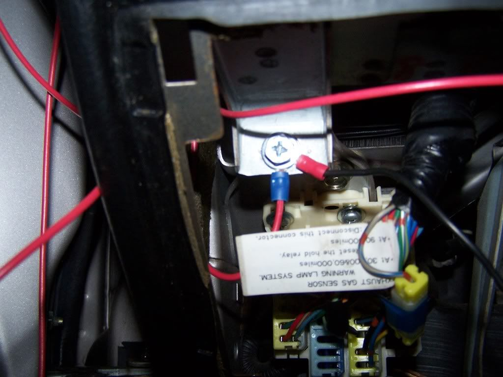
With two larger crimp connectors, cut six short pieces of wire and fasten three per wire to the other ends of the connectors like so:
Also you see I'm using the same color wire. I know, I'm cheap, but if you're doing it that way just make sure to mark either the ground or power wire so you don't mix them up.
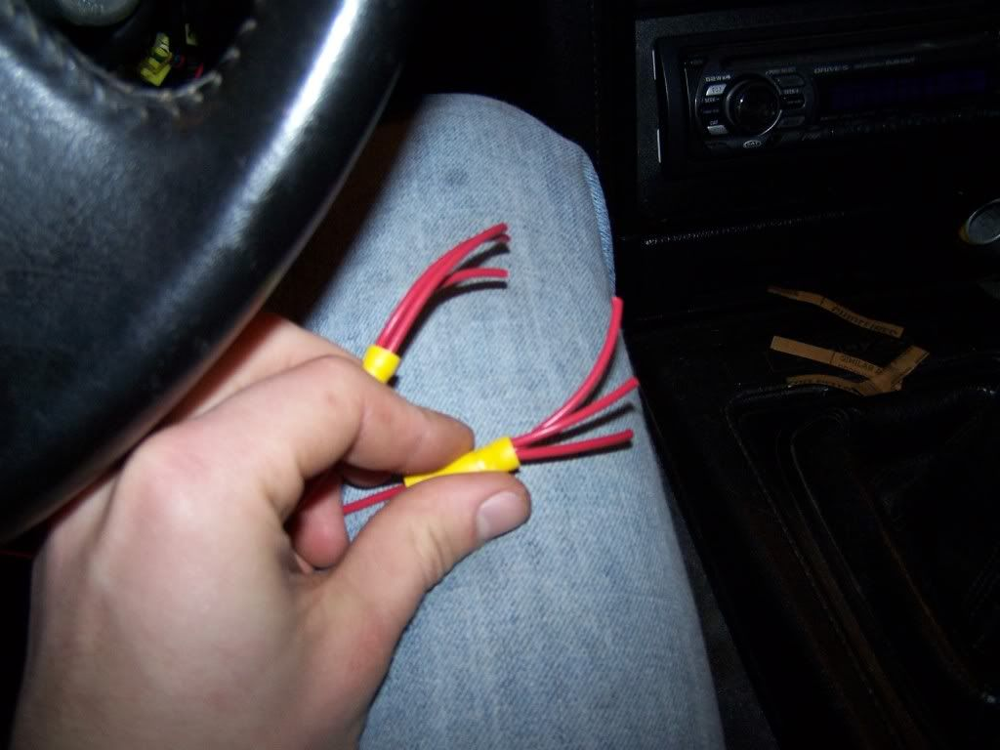
Grab the gauges and instructions to see which wires go where. connect the three power wires and ground wires to the splices you just made. You can also wire gauges into the headlights so they change when you turn them on, but I chose not to. I tried to clean the mess up with a little tape, and I ended up with this:
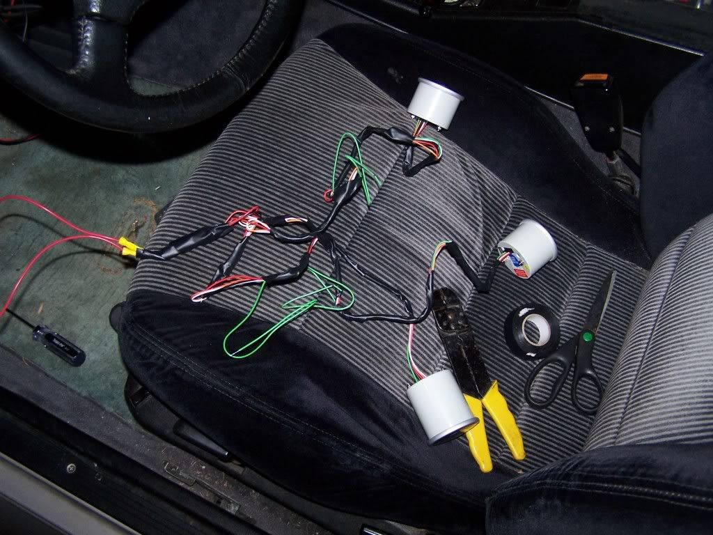
Turn the key and make sure the gauges come on before going any further. If they're good, you now need to install and wire in the sending units. I got oil pressure, water temp, and AFR gauges, like I said just to get the accurate readings that the stock gauges couldn't give me. The AFR gauge I really got just to fill the third hole in the pod. Anyway, for the water temp sender I used the port on the drivers side of the LIM towards the front. I used the stock oil pressure sending unit hole for the new one. I got a set of metric adapters with the gauges, and it had the sizes needed to install both senders. The AFR signal wire can be wired into the middle wire on the O2 sensor. Installing senders is pretty straight forward.
While you're under the hood, find which wires off the senders are the ground side, and use some wire and hardware to connect them to a body ground. There are plenty of small bolts in the engine bay that you can faster a round connector under for the ground.
Now feed three wires first through the dash like the other wires, then through the firewall to the engine bay. There is a rubber grommet up below where the slave cylinder mounts that you can cut and feed them through. Connect these to the senders and connect the other ends to signal wires for the respective gauges. I used some more electrical tape at this point to minimize the mess of wiring. Take the gauge pod and pop the gauges in. Mine fit very snug so there was no real need for the little hold downs they come with. Condense the wiring the best that you can and lay it neatly around the gauges.
You will have to work the bottom end of the pod a little to get it into place. Now maybe I'm just stupid, but I could not figure out the purpose of the screw placement on the lo-tek pod. It comes with two predrilled holes and screws that don't seem to line up with anything or be useful unless you drill and tap the actual a-pillar. I solved this by removing the mounting bolt for the roof trim that sits right under the top of the a-pillar trim, drilling a hole in the pod directly under it, and using that to hold the top of the pod. The bottom seemed to fit in snugly enough that there wasn't a need for a mounting screw. There may be something I totally missed for the included mounting points, but oh well.
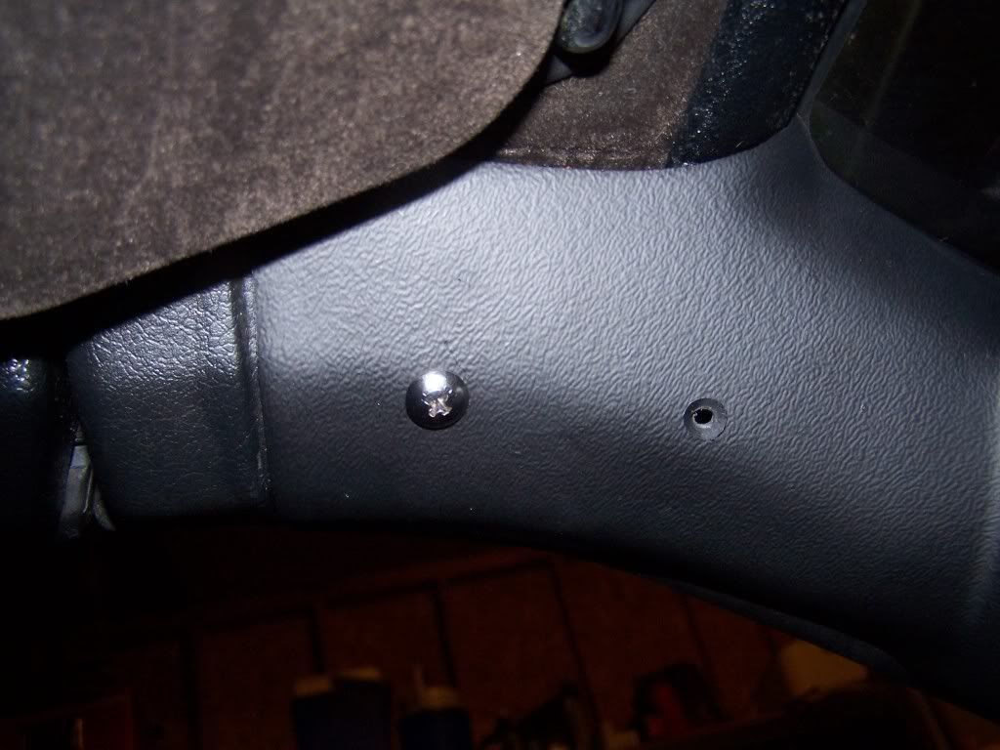
Not sure what I'll do about the open holes yet.
That about does it, you should have working a-pillar gauges now. It's alot more time intensive than it seems just reading through this, but it was worth it. Here's my finished product:
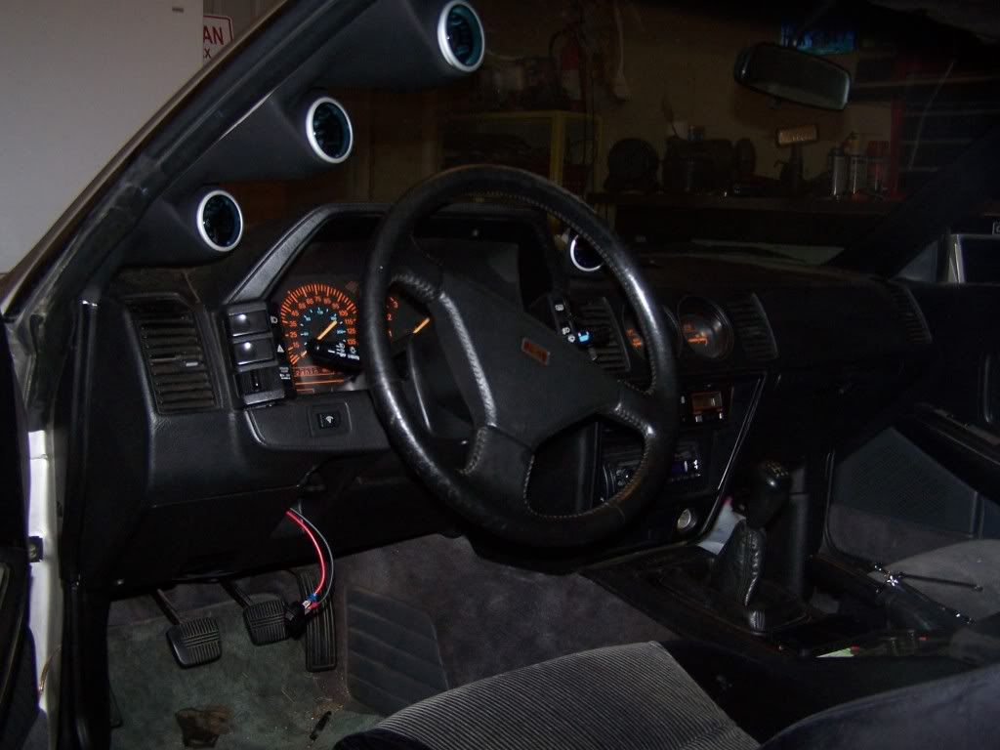
It still needed a little adjusting after this as you can see, but it worked out pretty well. Also please excuse my unmounted fan switch.
That's about it, feel free to PM me with any questions.
-
Thanks for posting this. Since you have to run wires through the firewall either way though, why not run dedicated power and ground wires instead of hacking up your factory harness?Zoey - 1987 Z31T GLL - HKS EVC / CM SS 3" turbo-back / Stance GR+
Black Betty - 2014 Audi C7 S6 APR1 -
How would you wire it to come on with the key without tapping into the harness? I guess you could use just a switch? -
I wired my e-fan ignition hot wire to the no-longer-used AIV connector. There are quite a few places under the hood you can tap for a hot wire without damaging your existing wiring.
EDIT: The gauges look good though.
As long as the wiring is insulated properly it's not like the way you did it is a problem. I just hate doing stuff to my car that I can't undo. Zoey - 1987 Z31T GLL - HKS EVC / CM SS 3" turbo-back / Stance GR+
Zoey - 1987 Z31T GLL - HKS EVC / CM SS 3" turbo-back / Stance GR+
Black Betty - 2014 Audi C7 S6 APR1 -
well done, and clean. good to see a nice write up!
I want to point out one thing you mentioned! --
Prosport gauges SELLS METRIC ADAPTERS! a bag set - including the BPT-NPT for our pressure port, and a M14 for the oil pan temp bung! FYI.Damn dirty angels....these cars!
Current Daily Driver - 86 Turbo.
Under the cover - THE BANANA… that needs to be re-energized.
sigpic -
They sure do, that's the one I got! -
Here is a better picture of them from my phone:
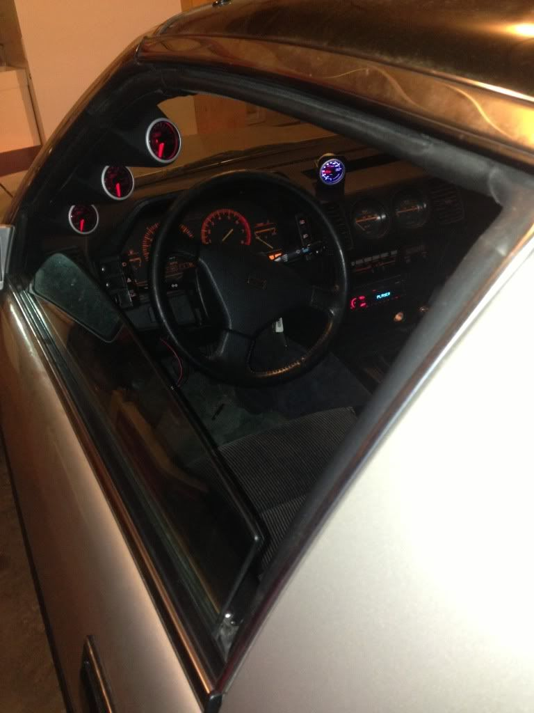 -
Tap a hot wire that only comes on when the key is on. I wired my fuse box that way that all my gauges run off of. Only ran a direct wire for the e-fan to a 40 amp switch so I could turn it on without the key in.Shuman47;318900 wrote: How would you wire it to come on with the key without tapping into the harness? I guess you could use just a switch?Usual Z31 suspect: Garage Queen (aka broken)

-
just plug the old holes with a #10x1/2 flat head wood screw. paint it black with some spray paint and it will sink right in.
I don't think there are any textured hole plugs that are that small. you could enlarge the hole a little bit and get a textured hole plug/interior push clip from the parts store. they have tons of styles.
for feeding power to auxiliar items, buy a turbo timer harness for an S13. it will piggyback on the stock ignition switch and provide a safe place to grab power from without messing with the stock harness :-)
and you could piggy back as many turbo timer harnesses as you need.

Copyright © 2006–. All rights reserved. Privacy Policy